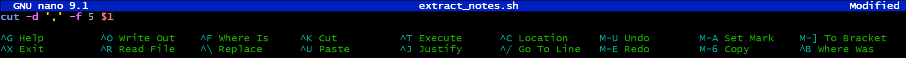
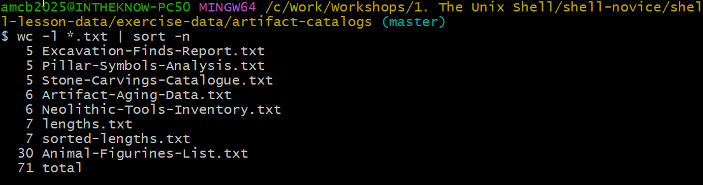
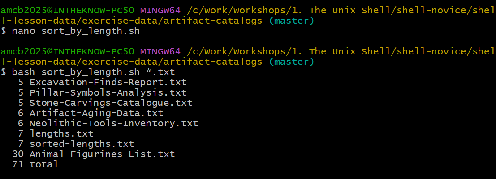
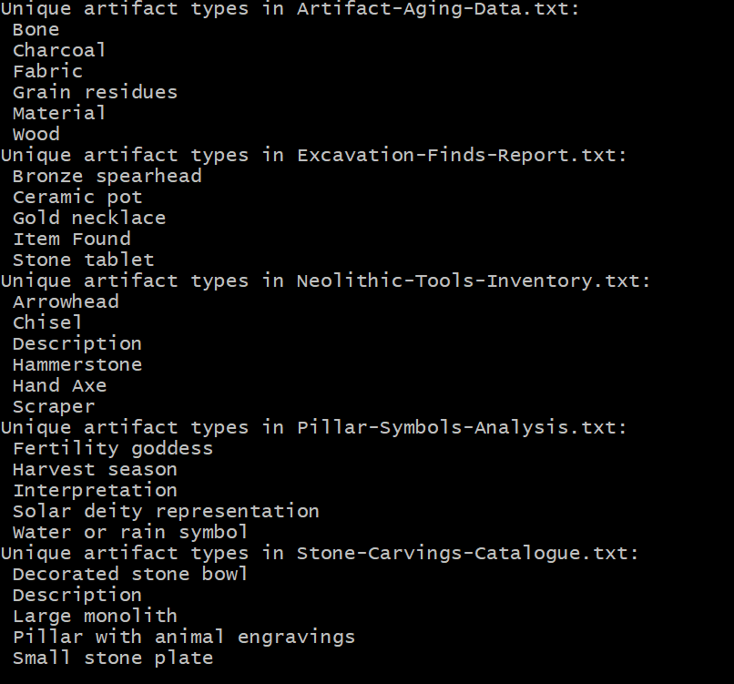

Creating Shell Scripts
Last updated on 2026-08-24 | Edit this page
Overview
Questions
- How can I automate and save recurring command sequences for later use?
Objectives
- Craft a shell script that runs a series of commands on a set of files.
- Execute a shell script from the command line.
- Develop a shell script that processes a user-defined set of files specified on the command line.
- Incorporate shell scripts you’ve created, or those created by others, into your data processing pipelines.
Shell scripts significantly enhance the functionality of the shell by
allowing the execution of pre-defined command sequences from a file.
This capability speeds up tasks, increases accuracy, and ensures
repeatability. Let’s practice creating a script for processing data in
the artifact-catalogs/ directory. Begin by creating a
script named extract_notes.sh:
In nano, type in:

{alt=‘GNU nano editing extract_notes.sh, marked Modified. The only content line is cut -d comma -f 5 dollar 1, with nano’s shortcut bar at the bottom.’}When run, this script will extract the “Notes” column from a
comma-separated file. (Our catalog files use commas between columns even
though their names end in .txt.) Save and exit nano
(Ctrl-O, Ctrl-X), ensuring
extract_notes.sh is in the artifact-catalogs
directory.
To execute the script:
Output:
OUTPUT
Notes
Near ceremonial area
In burial ground
Intact
FragmentedThe last two entries are cut short because those Notes themselves
contain a comma – cut ends field 5 at the next comma. (The
leading space on each line is part of the field, since this file has a
space after every comma.)
To make extract_notes.sh more versatile, enabling it to
process any specified file, modify it in nano to utilize $1
for the file name:
With the quotes around "$1", a filename containing
spaces stays together as a single argument: unquoted $1
would split my data.csv into my and
data.csv, while "$1" keeps
my data.csv whole. You can now run the script for any file
in the directory:
To further enhance extract_notes.sh to include
additional arguments for specifying which column to extract, update the
script as follows:
Run it with customized arguments:
Here $1 and $2 are positional
parameters: $1 holds the first argument you type after
the script name, and $2 the second. So in
bash extract_notes.sh Excavation-Finds-Report.txt 5,
$1 is the filename and $2 is
5.
Improve the script’s usability by adding instructional comments at the top:
BASH
# Extracts a specified column from a comma-separated file.
# Usage: bash extract_notes.sh filename column_number
cut -d ',' -f "$2" "$1"For tasks involving multiple files, such as sorting .txt
files by their content length:

Create a script named sort_by_length.sh for a broader
application:
BASH
# Sorts files by their line count.
# Usage: bash sort_by_length.sh one_or_more_filenames
wc -l "$@" | sort -nRun sort_by_length.sh with several files:

sort_by_length.sh in nano
and running it on all .txt files.This script exemplifies the use of $@ to handle multiple
files, showcasing the shell script’s ability to streamline and automate
complex command sequences.
Script for Listing Unique Artifact Types
Leah has several data files, each formatted with dates, artifact types, and counts. To efficiently compile a list of unique artifact types from these files without manually inputting commands, she decides to write a shell script.
Design a shell script named unique_artifacts.sh that
accepts an unlimited number of filenames as command-line arguments. The
script should display a list of unique artifact types mentioned in each
file provided. Each catalog file is comma-separated, with the artifact
type in the second column.
BASH
# Shell script to list unique artifact types from specified files
# Accepts multiple filenames as command-line arguments
# Iterate through each given file
for file in "$@"
do
echo "Unique artifact types in $file:"
# Extract and list unique artifact types
cut -d ',' -f 2 "$file" | sort | uniq
done
unique_artifacts.sh for
five of the catalog files (note the CSV header words appear among the
values).If we’ve executed a sequence of commands to produce a particular result, such as a figure for a report, we might want to regenerate this figure later without manually re-entering commands. To achieve this, we can save these commands to a file using:
redo-figure-3.sh now contains the commands used to
generate the figure, but it includes the history command itself and line
numbers which we don’t need. After a quick edit to clean up these
aspects, we’re left with a script that can accurately reproduce the
figure when executed.
Recording Commands in History Before Execution
Logging commands before their execution ensures a complete history, even if a command crashes the system or causes a hang. This pre-logging provides valuable context for troubleshooting the last actions before a problem occurred, offering insights into potential causes.
In practice, shell scripts evolve from command sequences tested at the prompt, gradually becoming saved files for later reuse. This approach allows us to encapsulate discoveries about data and workflow, ensuring reproducibility with minimal effort. Here’s a workflow example for creating a reproducible script:
Cecil’s Workflow: Script for Reproducible Analysis
Cecil aims to make their data analysis reproducible. They decide to encapsulate their process in a script, starting in their project’s root directory:
They create a script to process data files:
Inside nano, they write:
BASH
# Script to perform statistics on data files
for datafile in "$@"
do
echo Processing $datafile
bash ancientstats.sh $datafile stats-$datafile
doneThis script, named do-stats.sh, allows Cecil to process
files specified at the command line:
They can even streamline their process further by piping the output
to wc -l to count the processed files:
Cecil’s script is flexible, allowing the user to specify which files to process. This means they aren’t confined to a predefined set of files, providing the versatility needed for varied datasets.
Variables in Shell Scripts
With a directory named artifact-catalogs containing
various text files, consider a script named script.sh with
the content:
If you run the script within artifact-catalogs
using:
What would be the expected outcome?
- The script outputs all lines except the first and last from each
.txtfile. - It shows the first and last lines from each
.txtfile. - It displays the first and last lines from every file in the directory.
- It fails due to the quotes around
*.txt.
Option 2 is the correct answer. The quotes stop the shell from
expanding *.txt when you call the script, so
$1 receives the literal string *.txt. But
inside the script, $1 is used unquoted – so when
bash substitutes it into head -n $2 $1, the wildcard
becomes unquoted in that command and the shell expands it
there, matching every .txt file. The script
therefore prints the first and the last line of each .txt
file (with ==> filename <== headers when several
files match). Only if the script used "$1" – quoted – would
the literal *.txt reach head and fail as
option 4 describes. Try both variants to see the difference!
Identifying the Longest File by Extension
Create a script named longest.sh that finds the longest
file (by line count) with a certain extension within a specified
directory. For instance, its usage could be:
This command aims to identify the .txt file with the
most lines within the given directory.
Test the script from inside artifact-catalogs, where we
have been working – . refers to the current directory:
BASH
# Shell script to locate the longest file of a specified extension in a directory.
wc -l $1/*.$2 | sort -n | tail -n 2 | head -n 1This script calculates line counts for files with the given
extension, orders them, and picks the file with the highest line count,
excluding the final summary line wc produces when handling
multiple files.
Script Comprehension for File Operations
Given the artifact-catalogs directory with various
.txt files and potentially other files you’ve added,
analyze what the following three scripts would do when executed as
bash script1.sh *.txt, bash script2.sh *.txt,
and bash script3.sh *.txt, respectively.
For each scenario, the shell expands *.txt to a list of
matching filenames before passing them as arguments to the script.
Script 1 outputs a list of all files in the directory that contain a
period in their names, essentially listing files with extensions. The
provided arguments (*.txt) are not utilized in the script
itself.
Script 2 concatenates and displays the content of the first three
.txt files specified. $1, $2, and
$3 reference the first, second, and third command-line
arguments, respectively.
Script 3 prints all supplied arguments (i.e., all .txt
files) followed by .txt. Using $@ signifies
all arguments passed to the script, resulting in a redundant
.txt appended to each filename listed.
OUTPUT
Animal-Figurines-List.txt Artifact-Aging-Data.txt Excavation-Finds-Report.txt ... .txtScript Debugging
Imagine you’ve stored the script below in a file named
do-errors.sh within Cecil’s
gobekli-tepe-excavation directory:
BASH
# Calculate stats for data files.
for datafile in "$@"
do
echo $datfile
bash ancientstats.sh $datafile stats-$datafile
doneExecuting it from the gobekli-tepe-excavation directory
like so:
results in no output. To diagnose the issue, try running the script
again with the -x option:
What does the output reveal? Which specific line is causing the malfunction?
Activating the -x option puts bash into
debug mode, displaying each command before it’s executed, aiding in
pinpointing errors. This case shows that the echo command
produces no output due to a misspelling in the variable name;
datfile is undefined, leading to an empty output.
- Shell scripts save commands for later use, enhancing reusability.
- Executing
bash [filename]runs the saved commands in a file. -
$@denotes all command-line arguments passed to a shell script. -
$1,$2, and so on, refer to the first, second, and subsequent command-line arguments, respectively. - Enclose variables in quotes to handle values that may contain spaces.
- Allowing users to choose which files to process increases flexibility and aligns with the conventions of Unix commands.